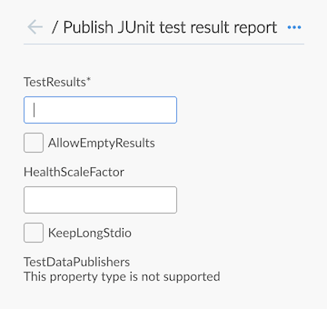
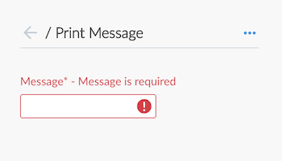

流水线编辑器
流水线编辑器是任何人在Jenkins中开始构建流水线的最简单的方式。这也是现有的Jenkins用户 开始采用流水线的很好的方式。
该编辑器允许用户创建和编辑声明式流水线, 添加可同时运行的阶段和并行任务, 这取决于它们的需要。完成后, 编辑器将流水线作为`Jenkinsfile`保存到源代码控制仓库中。如果流水线需要再次更改, Blue Ocean 可以轻松的返回到视图编辑器来随时修改流水线。
启动编辑器
要使用编辑器，用户首先要 在Blue Ocean中创建流水线 或者在Jenkins中已创建一个或多个现有的流水线。 如果编辑现有的流水线, 该流水线的凭证必须允许push更改到目标仓库。
编辑器可通过以下方式启动:
-
仪表板的 "New Pipeline" 按钮
-
单个运行的活动视图
-
流水线运行细节
流水线设置
默认情况下, 编辑器右侧显示 "Pipeline Settings"。 该表单可以通过点击 Stage editor的任何地方来访问， 这不是一个阶段，也不是"Add Stage" 按钮。
代理
"Agent" 吧部分控制流水线将要使用的代理。 这与 "agent" 指令相同。
环境
"Environment" 允许我们为流水线设置一个环境变量， 这与"environment" 指令相。
阶段编辑器
左侧的编辑器屏幕包括阶段编辑器, 用于创建流水线的各个阶段。

可以通过点击现有阶段右侧的 "+" 按钮，将阶段添加到流水线中。 Parallel stages can be added 通过点击现有阶段下面的 "\+" 按钮，将并行阶段添加到流水线中。 可以使用 阶段配置表中的上下文菜单删除阶段。
一旦设置完毕，该阶段编辑器就会显示每个阶段的名称。 包含不完整或无效信息的阶段将显示一个警告符号。 流水线可以在编辑时显示验证错，但是直到错误被修复前不能保存。

阶段配置
在阶段配置器中选择一个阶段， 将打开右侧的 "Stage Configuration" 表。 在这里，我们可以改变阶段的名称, 删除该阶段,并添加步骤到阶段。

阶段的名称可以在阶段配置表的顶部配置。 上下文菜单(右上角的三个点)可以用来删除当前阶段。 点击 "Add step"将会显示可用步骤类型的列表 ，顶部有一个搜索栏。 步骤可以使用上下文的 在步骤配置表中的上下文菜单删除。 添加步骤或选择一个现有的步骤将打开 步骤配置表中。
file">
步骤配置
从阶段配置表中选择一个步骤将打开步骤配置表。

这张表将根据步骤类型而有所不同, 它包含了所需的任何字段或控件。 步骤的名称不能被更改。 上下文菜单 (右上角的三个点), 可以用来删除当前步骤。 包含不完整或无效信息的字段将会显示一个警告符号。 流水线可以在编辑时显示验证错，但是直到错误被修复前不能保存。

保存流水线对话框
为了运行, 必须在源代码控制中保存对流水线的更改。 "Save Pipeline" 对话框控制源代码控制的更改保存。
可以添加或保留对更改的有用描述。该对话框也支持保存相同的分支或进入一个新的分支来保存。 点击 "Save & run" 将会把流水线的任何更改保存为新的提交, 将启动一个基于这些更改的新的流水线运行, 并且导航到该流水线的 活动视图 。